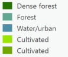

Land Use Classification
In this assignment we used data fromt he satellite sentinel-2. The satellite revisits an area every 5 days (temporal resolution), and each pixel represents 20m (spatial resolution). The information collected is the wavelengths of the electromagnetic waves and its intensity. This information can then be applied in many ways. For instance, one could look at vegetation health. Healthy plants reflect a much larger amount of near infrared light compared to visible infrared. On the other hand unhealthy vegetation emits more visible infrared than healthy plants. This gives a method to classify healthy and unhealthy vegetation. Many types of land cover have unique spectral signitures comprised of different ratios elecrtomagentic waves. From this, we can then infer how the land is used.
To classify the data, machine learning techniques are often used, which involves a computer program sorting the land cover based ont he spectral signitures. Supervised and unsupervised classification schemes were tested, using both pixel and object oriented methods. For the goal of classifying land use as either forested, cultivated, water or urban, the unsupervised pixel-oriented classification did best. The main categories were distinct, and none of the categories were too overgeneralized. Note however that with more training data the supervised classification could do better.
Land use classification
Here an unsupervised pixel based classification scheme was used. Dense forest is identified consistently, as are urban spaces. However, urban spaces and water were combined into one group. Cultivated land was divided into two classes, and the distinction between cultivated land less dense forest is not so clear.
Vegetation Health
In the map above healthy vegetation is shown in darker green colors. This is done using the data from sentinel-2 as described in the introduction.
Making the maps
The data, supported by the European Space Agency (ESA), was accessed through google earth engine (GEE). A region of interest was defined, and the band combinations changed. To see healthy vegetation bands B8, B4 and B3 were used. For classifying land the bands for agriculture (B11, B8 and B2) were used. The image was then exported and analyzed in arcGIS pro using the different classification systems described earlier.